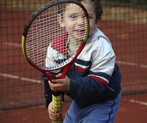

Tennis and Why it is Great for Kids
In This Article: Choose the right program Choose the right racket Choose the right shoes
Thinking of lessons for your child? Here’s how to ensure a great time on the court.
Choose the right program
When you're looking for youth tennis lessons, one of the most important things to consider is the program type. The right format and facility will provide a foundation for your child to learn and love the game.
Facility scale:
It's challenging enough for adult players to cover a standard tennis court; imagine the frustration of an eight year old attempting the same. When you're researching tennis programs for your child, look for one whose facility is scaled for smaller players. Programs like QuickStart offer courts that are smaller, balls that have less bounce and are easier to hit, and smaller tennis rackets that are easier for kids to handle. Kids learn the game faster and will enjoy themselves more if they feel as though they are really playing. Before you enroll your child in any program, ask how the facilities are scaled to meet the needs of younger players.
Format:
In most areas, parents can choose from recreational programs, group lessons or private lessons.
- Look for recreational programs through your local parks and rec department or community centers. They're very informal, inexpensive and geared toward having fun. They're great for kids who haven't been exposed to tennis before and are just starting out. Class sizes vary, so students may not get a lot of one-on-one time with the instructor.
- Group lessons are offered by for-profit or nonprofit athletic organizations like the YMCA, and are the most common form of youth tennis instruction. Group lessons are often taught by local tennis pros or high school players and offer more individualized attention while still remaining affordable.
- Private lessons are the most expensive option. Taught by experienced pros, private tennis lessons are best suited for the beginner who wants an individual instruction to learn the game.
Instructional style: When kids enjoy playing a sport, they're more likely to stay engaged with the game. A good beginning tennis program will offer a balance between building skills and having fun. If you have the opportunity to observe classes before signing your child up, do so. Take note of how instructors interact with students to see if their instructional style is a good match for your son or daughter.
Choose the right racket
A proper tennis racket is essential for beginning tennis players. Size is the most important factor in choosing the right racket. A racket that is too small won't give a child enough reach to hit the tennis ball, while a racket that is too big will be unwieldy and difficult to handle. By contrast, the correct sized racket will help your child develop good, smooth strokes by maneuvering the racket properly.
Choose a store where your child can handle and hold different rackets. Have them stand with their arms straight at their sides. The correct sized racket will be one that spans the length from her fingertips to the ground. Once you've identified a few rackets of the right length, let them try a few swings with each one. The best racket is the one that your child can comfortably handle by using their whole arm, not just the wrist.
Choose the right shoes
When you hear tennis shoes,” you probably think of any type of casual sneakers, but shoes for playing tennis are specifically designed for the game. Tennis shoes are made to accommodate constant movement, jumping, quick pivots and running both side to side and up and down the court. To choose the right shoe, consider these two tips.
Proper Fit:
Shoes should fit in both length and width. Your child's feet should not slide around inside the shoe, either front to back or side to side. If you can get your child's feet measured, do so. Ankle support is critical in tennis because of the quick pivots and movements required of the game. Your child's foot should sit low in the shoe, where it will be best supported.
Soles: The right soles depend on the type of court on which your child will be playing. A hard court requires a non-marking, durable sole. A grass court requires a dimpled sole that provides traction against slippery grass. A clay court requires shoes with a feathered or herringbone pattern on the sole, designed to grip the clay while preventing build up in the tread. Most facilities require shoes specific to their courts, so check with the program before you make a purchase.
Related Categories